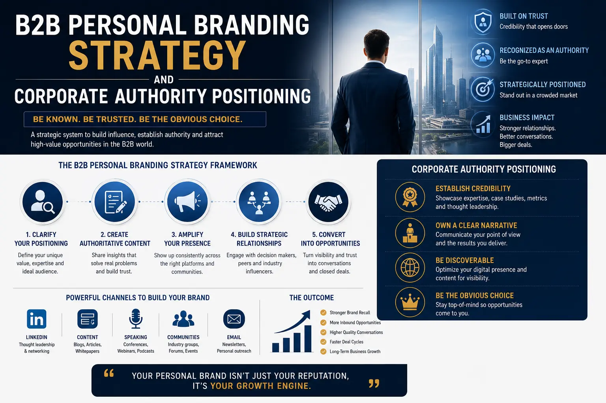
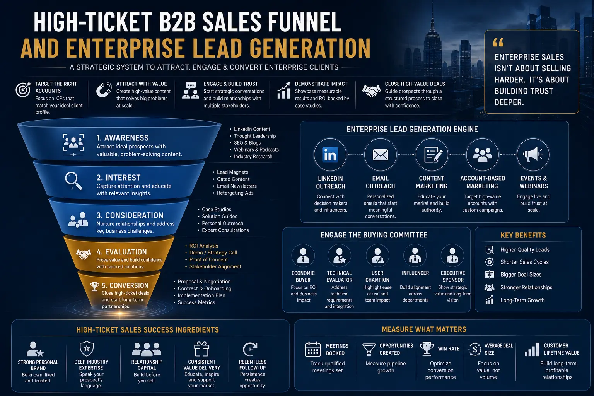

Closing Enterprise Deals: Structuring B2B Personal Branding Pipelines That Bypass Gatekeepers
The Gatekeeper Paradox in Modern Enterprise Sales
The gatekeeper is the sentinel of the enterprise. For decades, executive assistants, procurement filters, automated spam software, and caller ID systems have functioned as an impenetrable shield, protecting C-suite decision-makers from the endless barrage of vendor solicitations. If you are a founder, a consulting partner, or an enterprise sales leader, you have likely felt the frustration of this friction. You have a solution that can save an enterprise millions of dollars, yet your cold emails go unread, your LinkedIn connection requests are ignored, and your cold calls never make it past the front desk.
This is the gatekeeper paradox: the very people who need your solution the most are the hardest to reach. The traditional outbound sales playbook—reliant on volume, repetition, and persistent follow-ups—is not only losing its efficacy; it is actively damaging your brand's reputation. When your outreach looks, smells, and sounds like a generic sales pitch, it is treated as noise. In the modern B2B landscape, you must find a way to connect directly with decision-makers on social and professional networks, completely bypassing traditional sales gatekeepers.
To bypass these gatekeepers, you must change the rules of engagement. You cannot force your way through the door; you must be invited in. This is where a structured Personal Branding Strategy becomes your most powerful sales engine. By building a visible, authoritative professional identity, you transform yourself from an external vendor trying to sell a product into a recognized expert whom enterprise leaders actively seek out for guidance. In the realm of B2B Executive Client Acquisition, your personal brand is the ultimate key that unlocks closed boardrooms and bypasses traditional sales channels, allowing the relationship to begin as a peer-to-peer strategic dialogue.
Why C-Suite Leaders Need a Structured B2B Personal Branding Pipeline
The business case for a structured Personal Branding Strategy is not theoretical; it is measurable and direct. Research consistently shows that B2B buyers are more likely to engage with companies whose leadership has a visible, credible personal brand. When you establish your authority before the introduction, you transform a sales pitch into a strategic consultation. C-suite leaders and board members consume and value high-quality content, associating the author with strategic solutions rather than vendor solicitation.
By building a robust personal brand, you ensure that you are top-of-mind when decision-makers face challenges that align with your expertise. It reduces sales friction and allows you to initiate deal discussions directly. Furthermore, it supports your overall business development by creating a consistent stream of inbound inquiries, making it easier to scale your services and secure long-term contracts.
Direct Decision-Maker Access
By executing a targeted Personal Branding Strategy, your insights reach C-suite leaders directly on their preferred professional networks. When an executive consumes and values your content, they associate your name with strategic solutions. This peer-to-peer trust enables you to initiate direct dialogue and bypass traditional gatekeepers entirely, facilitating efficient B2B Executive Client Acquisition.
Compressed Sales Cycles
Traditional enterprise sales cycles are notoriously long, often stalled by multi-layered review committees. A strong personal brand pre-sells your competence before the first meeting. Because prospects are already familiar with your methodology and executive thought leadership, you skip the basic validation stage and move straight to strategic alignment, accelerating the decision-making process.
Insulated Pricing Power
Commoditized vendors are forced to compete on price, often squeezing margins in procurement negotiations. Active Corporate Authority Positioning shields your firm from commoditization. When you are recognized as the leading expert in your field, clients are willing to pay a premium for your specific expertise, preserving your margins and increasing contract value.
Organic Executive Referrals
In high-ticket enterprise markets, the best opportunities come from trusted peer referrals. When your personal brand commands respect, industry leaders and board members advocate for you within their closed circles. This organic word-of-mouth distribution fuels your B2B pipeline, generating warm, high-intent leads that are far easier to close than outbound prospects, which drives overall personal brand business growth.

Shift from Vendors to Peers: Corporate Authority Positioning
In enterprise sales, deals are rarely decided on features or pricing alone. They are decided on risk mitigation. When an enterprise executive signs a high-value contract with a consulting firm or software provider, they are putting their professional reputation—and potentially their job—on the line. If the project fails, they bear the consequences. Therefore, enterprise decision-makers are inherently risk-averse. They do not want to buy from a commodity vendor; they want to partner with the industry authority.
Establishing this authority is not an accident; it is the result of deliberate Corporate Authority Positioning. When your leadership team actively demonstrates executive thought leadership, they build a protective moat of trust and credibility around your organization. When you publish deep-dive analyses of industry trends, share proprietary frameworks, and speak authoritatively on the future of your sector, you shift the buyer's perception of your value.
You are no longer pitching a service; you are presenting a perspective. This shift is critical because it changes the dynamic of the relationship. Instead of a salesperson pleading for fifteen minutes of an executive's time, the interaction becomes a peer-to-peer dialogue between two strategic leaders. This peer dynamic is the foundation of successful B2B Executive Client Acquisition. When enterprise buyers view you as a peer rather than a salesperson, the gatekeeper's shield naturally falls away, paving the way for smooth negotiations and higher closing rates.
Inbound Marketing for Consultants: The System of High-Intent Attraction
For professional services, consulting firms, and boutique agencies, outbound lead generation is increasingly inefficient. The partners and senior leaders who possess the actual expertise are too busy managing client work to spend hours cold pitching, while junior sales staff lack the depth of knowledge required to engage enterprise buyers. The solution is a transition to Inbound marketing for consultants. Rather than chasing leads, you must create a system where high-intent buyers discover you.
C-suite leaders do not search Google for basic explanations; they search for strategic solutions to complex problems. If you are targeting a Chief Information Officer, they are not looking for a general guide on cybersecurity; they are looking for a deep-dive analysis on how to manage supply chain risk in a hybrid cloud environment. By creating executive thought leadership assets that address these specific pain points, you align your content with the natural search and discovery habits of your buyers.
Effective Inbound marketing for consultants focuses on depth, not breadth. It is far better to write a single, comprehensive article that is read by fifty qualified decision-makers than to write a superficial piece that gets ten thousand views from entry-level professionals. Every asset you publish should demonstrate your proprietary methodology and your ability to solve complex, high-ticket enterprise problems. This high-intent attraction system ensures that when prospects engage with your firm, they are already pre-qualified and ready for a strategic discussion, which serves as a catalyst for personal brand business growth.
Deconstructing the High-Ticket B2B Sales Funnel
How do you translate views, likes, and comments into high-value enterprise contracts? This is where many executive personal branding efforts fail. Leaders spend time publishing content on LinkedIn but have no mechanism to capture and nurture that attention. They build visibility but fail to build a pipeline. To convert authority into revenue, you must design a structured high-ticket B2B sales funnel. Unlike consumer marketing funnels, which are transactional and automated, an enterprise B2B funnel is relational, multi-stage, and focused on trust.
The funnel begins with the creation of high-intent search content and social authority. This content drives traffic to your digital assets. Once a prospect visits your website or profile, you must offer an authority asset—such as a proprietary framework document, an industry benchmark report, or an exclusive executive briefing—that requires them to opt-in with their contact information. This step initiates the enterprise lead generation process.
Once a prospect is in your funnel, they enter a high-touch nurture sequence. For enterprise sales, this is not a sequence of automated sales pitches. Instead, it is a series of value-first communications that share original research, case studies, and strategic insights. The goal is to continuously validate your expertise and keep your brand top-of-mind. The final stage of the high-ticket B2B sales funnel is the transition to a diagnostic call. You do not ask for a "sales meeting"; you offer a complimentary, high-value strategic evaluation or diagnostic session. This call allows you to assess the prospect's needs, demonstrate your expertise in real-time, and position your core services as the natural solution to their challenges.
Thought Leadership Content Framework
Establish a consistent publishing rhythm of executive thought leadership across professional networks. Focus on sharing proprietary frameworks, industry analyses, and original data. This content serves as the entry point of your pipeline, building awareness and authority with target decision-makers.
High-Value Authority Assets
Develop premium gated resources—such as industry whitepapers, research reports, or diagnostic templates—that address complex enterprise challenges. These assets convert passive readers into active prospects, driving your enterprise lead generation engine and capturing high-intent leads.
Strategic Nurture & Diagnostics
Nurture your leads with value-driven communications that build deep trust. Guide prospects toward a low-friction diagnostic session where they can experience your methodology firsthand. This approach converts interest into high-value opportunities within your high-ticket B2B sales funnel.

Corporate Reputation Management: The Safeguard for High-Ticket Closures
As your personal brand grows and starts generating inbound leads, you will inevitably face increased scrutiny. Enterprise buyers do not sign high-value contracts blindly. Before finalizing any deal, procurement teams, compliance officers, and board-level decision-makers will conduct thorough due diligence. They will Google your name, review your company's digital footprint, and examine your public profiles. If they encounter inconsistent messaging, unprofessional content, or negative search results, the trust you built during the sales process can instantly evaporate.
This is why active corporate reputation management is an essential pillar of any enterprise branding strategy. Your digital reputation is your digital currency. Proactive corporate reputation management ensures that when stakeholders search for you or your company, they find a consistent, professional, and authoritative narrative. This involves optimizing your Google search results, monitoring public mentions, managing online reviews, and ensuring that your personal and corporate profiles are fully aligned.
A well-managed reputation is critical for sustainable personal brand business growth. It acts as a safety net that protects your pipeline and accelerates deal closures. When your public narrative is polished and authoritative, it reinforces the value of your services and gives enterprise buyers the confidence they need to sign high-value contracts. By integrating reputation management with your Personal Branding Strategy, you build an asset that secures and grows your business over time.
Actionable 120-Day Execution Roadmap
Structuring B2B personal branding pipelines requires a systematic approach. Here is a 120-day roadmap to guide your implementation:
- Phase 1: Brand Strategy & Audit (Days 1-30): Begin by defining your positioning, target audience, and content pillars. Conduct a comprehensive digital audit of all existing profiles and websites. Rewrite your personal bios and optimize your LinkedIn profile to ensure a professional, consistent narrative. This forms the basis of your Personal Branding Strategy.
- Phase 2: Content & Asset Development (Days 31-60): Develop your core thought leadership assets, including whitepapers, research reports, or diagnostic frameworks. Establish a consistent content calendar and begin publishing high-value articles that address specific client challenges. This phase sets up your Inbound marketing for consultants framework and enhances your Corporate Authority Positioning.
- Phase 3: Lead Generation & Funnel Optimization (Days 61-90): Launch your high-value gated assets to capture prospect details. Set up your email nurture sequence to share valuable insights and keep prospects engaged. Implement a low-friction diagnostic booking process to transition leads into active pipeline opportunities, executing your high-ticket B2B sales funnel strategy and driving enterprise lead generation.
- Phase 4: Relationship Nurturing & Pipeline Scaling (Days 91-120): Focus on nurturing relationships with high-intent prospects who have entered your funnel. Monitor your digital footprint and execute proactive corporate reputation management strategies. Analyze pipeline metrics and optimize your content and distribution channels to accelerate personal brand business growth and maximize B2B Executive Client Acquisition.
Conclusion: The Ultimate Enterprise Sales Moat
In the competitive landscape of enterprise sales, traditional outbound tactics are no longer sufficient to bypass gatekeepers and close high-value deals. By structuring B2B personal branding pipelines, you build a powerful marketing engine that attracts C-suite leaders and accelerates the sales cycle. Through a combination of a targeted Personal Branding Strategy, active Corporate Authority Positioning, a structured high-ticket B2B sales funnel, and proactive corporate reputation management, you can position your consultancy or business as the ultimate industry authority.
Ultimately, a successful personal branding pipeline is about building trust at scale. When you become the recognized voice of authority in your niche, the gatekeepers cease to be an obstacle because the decision-makers are already looking for you. By taking control of your professional narrative, you build a sustainable asset that drives long-term growth, protects your reputation, and ensures that your business remains the partner of choice for leading enterprises.
Key Topics
Ready to Build a B2B Personal Branding Pipeline that Closes Enterprise Deals?
At The PhD Ads in Madurai, we specialize in structuring B2B enterprise personal branding pipelines, Corporate Authority Positioning, executive thought leadership assets, and corporate reputation management. We help consultants, founders, and executives transform their expertise into a strategic client acquisition engine that attracts decision-makers and bypasses gatekeepers. Let us help you accelerate your personal brand business growth with our tailored solutions.
Email: team@e2o.in